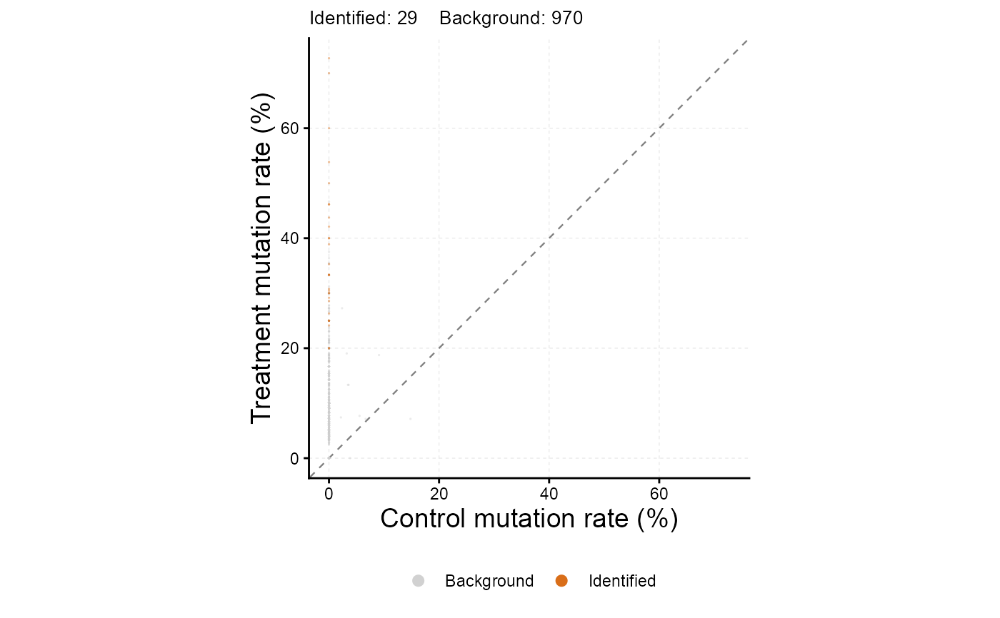
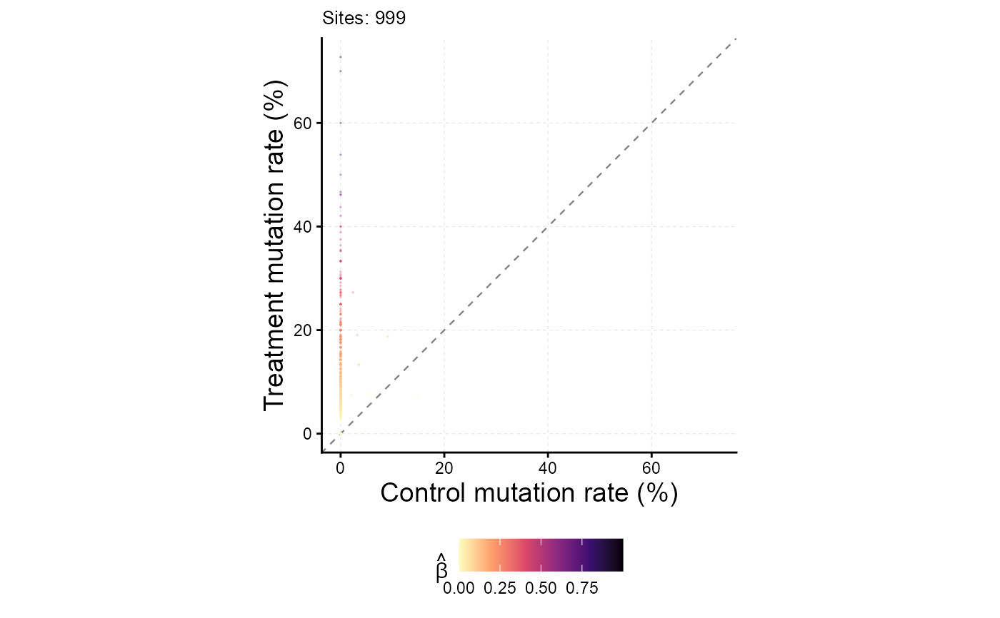

Scatter plot of treatment vs control mutation rate from MIRAGE results
Source:R/plot_signal_scatter.R
plot_signal_scatter.Rdplot_signal_scatter plots per-site control vs treatment mutation
(or conversion) rates from a MIRAGE result, optionally colored by
significance call or by inferred site-level signal beta_est. It is a
one-line diagnostic for the output of
estimate_inference_with_empirical.
Usage
plot_signal_scatter(
res,
color_by = c("significance", "beta_est", "none"),
fdr_col = "lrt_fdr",
fdr_cutoff = 0.05,
sites = c("both", "homo", "heter"),
xlab = "Control mutation rate (%)",
ylab = "Treatment mutation rate (%)",
point_size = 0.6,
point_alpha = 0.4,
rasterize = FALSE,
rasterize_dpi = 300
)Arguments
- res
The list returned by
estimate_inference_with_empirical.- color_by
How to color points.
"significance"marks sites withres[[fdr_col]] < fdr_cutoffas "Identified"."beta_est"shades by the estimated site-level signal."none"uses one color. Default"significance".- fdr_col, fdr_cutoff
Column and cutoff used when
color_by = "significance". Default"lrt_fdr"and 0.05.- sites
Which sites to plot:
"both"(default),"homo", or"heter".- xlab, ylab
Axis labels.
- point_size, point_alpha
Aesthetic controls for
geom_point.- rasterize
If
TRUEand ggrastr is installed, rasterize the point layer atrasterize_dpi. Useful for millions of points.- rasterize_dpi
DPI for the rasterized point layer.
Examples
count_table <- read.delim(system.file("extdata",
"pos.read.count.example.parclip.txt", package = "MIRAGE"))
res <- with(count_table, estimate_inference_with_empirical(
cbind(pos, motif, type), treated_fixed_count, control_fixed_count,
treated_depth, control_depth, bg.method = "lrt", bg.target = "both",
seed = 123))
#> Considering 989 (99%) sites as homozygous...
#> Considering 794 (80.28%) sites as background (homozygous sites only)...
#> Considering 29 (2.93%) sites as high-signal site candidates (homozygous sites only)...
plot_signal_scatter(res) # by significance

plot_signal_scatter(res, color_by = "beta_est") # by inferred signal
